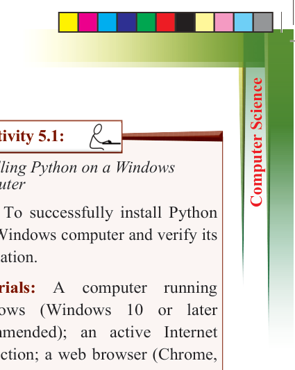
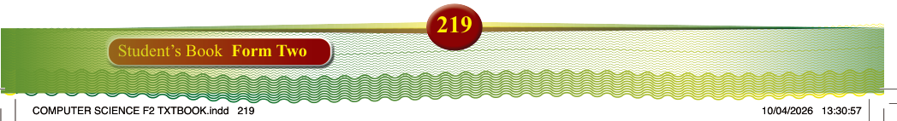
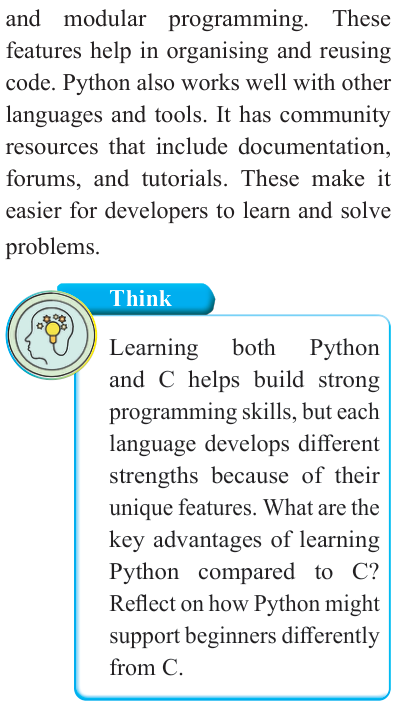

219
Student’s Book Form Two
and modular programming. These
features help in organising and reusing
code. Python also works well with other
languages and tools. It has community
resources that include documentation, forums, and tutorials. These make it
easier for developers to learn and solve problems.

Think
Learning
both
Python
and C helps build strong
programming skills, but each
language develops different
strengths because of their
unique features. What are the
key advantages of learning
Python compared to C?
Reflect on how Python might
support beginners differently
from C.
Installing Python and setting up the
environment
To start programming in Python, you must install and set up a development
environment. Python is an interpreted,
high-level programming language that
comes with a built-in standard library,
making it easy to start coding right away.
Installing Python
Python can be installed on different
Operating Systems, including Windows, macOS, and Linux.

Activity 5.1:
Installing Python on a Windows computer
Aim: To successfully install Python
on a Windows computer and verify its installation.
Materials: A computer running
Windows (Windows 10 or later recommended); an active Internet
connection; a web browser (Chrome,
Edge, Firefox, etc.); Python installer (to
be downloaded from python.org)
Instructions: Use the following steps
to install Python on Windows computer.
Step 1: Download the Installer from www.python.org.
Download the latest Python version.
Step 2: Open the downloaded .exe
file and run the installer.
Step 3: Select “Add Python to
PATH”:
(a) Check the box labeled “Add
Python to PATH” before
clicking Install Now.
(b) This allows you to run Python from the command prompt.
Step 4: Ensure IDLE is Installed:
(a) While you are setting up
Python, make sure that you
download IDLE (Integrated
Development and Learning
Environment).